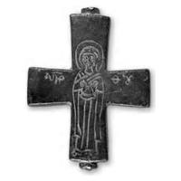
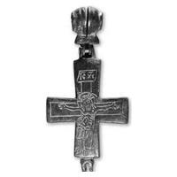

Catalog › CE-0461 · SYR2012-38
Encolpion bivalv de aliaj de cupru, cat. 38, NMIU Kiev
sec. XIII (1201–1300) · loc necunoscut · Muzeul Național de Istorie a Ucrainei (НМИУ), Kiev; colecția „siriană” B. I. și V. N. Hanenko, inv. valva anterioară: в 4626/294 (4756); valva posterioară: в 4626/292 (4210)
double-sided reliquary cross (enkolpion), altul; c. XIII (1201–1300); find spot unknown; kept at Muzeul Național de Istorie a Ucrainei (НМИУ), Kiev; colecția „siriană” B. I. și V. N. Hanenko.




Identificare
- Categorie
- Encolpion bivalv (relicvar)
- Material
- Altul
- Tehnică
- Gravare (incizie)
- Dimensiuni
- Î 66 × L 55 × Gr 4 mm
Iconografie
- Descriere avers
- Maica Domnului în picioare, cu palmele deschise în fața pieptului, redată sumar: contururile principale ale figurii, trăsăturile feței, nimb neted; sunt marcate direcția pliurilor maforionului, încrucișat pe piept și căzând de la coate de ambele părți, brâul și chenarul tivului tunicii, din care abia se văd vârfurile picioarelor. Pe frunte, posibil, o piatră prețioasă. De o parte și de alta, inscripția.
- Revers
- Răstignirea (Hristos cu perizoma)
- Descriere revers
- Răstignirea ocupă tot câmpul valvei. Hristos este înfățișat încins (perizoma), cu capul coborât spre umărul drept, brațele aproape drepte, trunchiul puternic arcuit; picioarele îndoite la genunchi sprijinite pe un suport (drept?). Stigmate pe palme și tălpi; trăsăturile anatomice ale corpului sunt subliniate; rănirea coastei și sângele curs sunt redate convențional. Lemnul crucii se abate de la axa verticală în partea de jos; capătul de sus este o tăbliță oblică cu inscripția IC XC (sub titluri); capătul superior al lemnului crucii, de obicei ieșind deasupra tăbliței, nu este marcat.
- Inscripții
- MHP Θ (sub titIuri); IC XC (sub titIuri)
- Limba
- Greacă
Datare și atribuire
- Datare
- sec. XIII (1201–1300)
- Tipologie
- cruce-relicvar cu oglavie bivalvă și Răstignire cu semne tardive
Descoperire
- Context
- Colecție (fără context)
- Coordonate
- 50.4536° N, 30.5164° E
- Precizia locului
- Loc de păstrare (loc de descoperire incert)
Păstrare și referințe
- Colecție
- Muzeul Național de Istorie a Ucrainei (НМИУ), Kiev; colecția „siriană” B. I. și V. N. Hanenko
- Nr. inventar
- valva anterioară: в 4626/294 (4756); valva posterioară: в 4626/292 (4210)
- Bibliografie
- A. A. Пескова, Л. В. Строкова, Христианские древности Византии в «Сирийской коллекции» Б. И. и В. Н. Ханенко, Sankt-Petersburg–Kiev, 2012, 225 p. [Peskova, Strokova 2012], p. 121, cat. nr. 38, ilustrația (fotografie și desen) de la p. 121.
- Figura
- ilustrația la cat. nr. 38
- Planșe
- Peskova, Strokova 2012, p. 121
- Observații
- Cruce-relicvar cu brațe drepte ușor evazate, cu oglavie bivalvă; înălțime totală cu oglavie 11,1 cm. Urechile valvei anterioare și cele de jos ale valvei posterioare au formă neobișnuită (pe bază semicirculară); urechile valvei anterioare rupte până la bază, una de jos a valvei posterioare deteriorată; oglavia, în mod evident „străină”, secundară, este prinsă de valva posterioară cu un cui din metal de altă culoare și ar putea fi de origine rusă veche. Pe capetele de sus ale ambelor valve, urme de ornament din ciupituri sau amprente triunghiulare foarte mici. În textul de atribuire, autoarele consideră apariția crucii cea mai probabilă în Dunărea de Jos la cumpăna sec. X–XI (inclusiv la Dorostolon), deși semnele târzii ale Răstignirii (apărute în sec. XIII–XIV) și rubrica de atribuire indică sec. XIII. Singura analogie iconografică pentru Maica Domnului: valva anterioară a crucii de la Silistra (Dorostolon). Dimensiuni în sursă (în paranteză, înălțimea cu urechile): 6,6 (7,3)×5,5 cm; 6,7 (8,7)×5,5 cm; înălțime totală cu oglavie 11,1 cm; grosime 0,4–0,45 cm; 0,4 cm. Vechiul număr de inventar al Muzeului de Artă Hanenko (1925) este cel din paranteză. Album Hanenko, vol. III (needitat): valva anterioară tabla XLIV, nr. 445; valva posterioară tabla XLIV, nr. 446. Atribuirea autoarelor: Dunărea de Jos sau Rusia veche, sec. XIII. Locul descoperirii nu este dat în sursă. Material în sursă: aliaj de cupru. Locul descoperirii nu e cunoscut cu precizie; punctul de pe hartă marchează locul de păstrare (Muzeul Național de Istorie a Ucrainei), nu locul descoperirii. Coordonate: nu sunt date în sursă.
Citare: Corpus Encolpiorum, CE-0461, Encolpion bivalv de aliaj de cupru, cat. 38, NMIU Kiev, https://vitaliejosanu1979-ux.github.io/primul-meu-proiect/piese/SYR2012-38/ (accesat 2026-10-17).